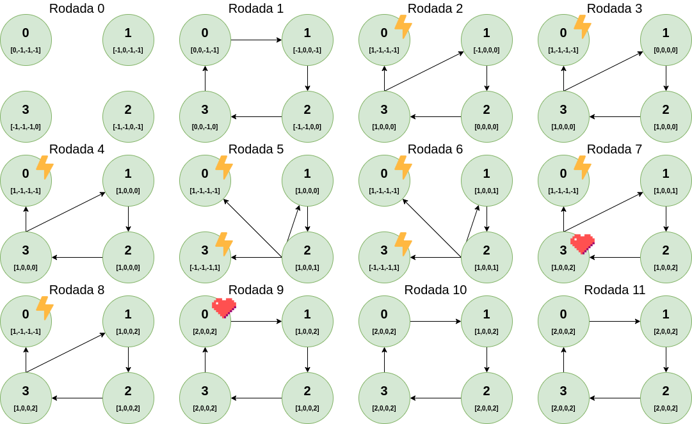

Especificação: Implemente o algoritmo VRing no ambiente de simulação SMPL, e mostre resultados para diversos valores de N e diversos eventos - um evento em um processo de cada vez, um evento só ocorre depois do evento anterior ser diagnosticado. Para cada evento mostre claramente o número de testes executados e a latência para completar o diagnóstico do evento. Cada nodo mantém o vetor STATE[0..N-1] de contadores de eventos, inicializado em -1 (estado “unknown”). Assume-se que os processos são inicializados sem-falha, a entrada correspondente ao próprio processo no vetor STATE[] do testador é setada para zero. Ao descobrir um novo evento em um nodo testado, o testador incrementa a entrada correspondente no vetor STATE[].
Para a transferência de informações de diagnóstico lembre-se da estratégia do VRing: quando um processo sem-falha testa outro processo sem-falha obtém informações sobre os estados de todos os processos que não testou no intervalo de testes corrente. É importante comparar as entradas correspondentes dos vetores STATE (testador e testado) para saber se o testado tem alguma novidade. Se o valor da entrada for maior no vetor STATE do processo testado, então copia a informação.
O código foi escrito a partir do código da tarefa4.c do Trabalho Prático 0. As seguintes alterações foram realizadas para cumprir os requisitos do Trabalho Prático 1:
Os testes a seguir foram executados para demonstrar a corretude do programa. A rodada 0 indica o estado inicial dos processos. A partir da rodada 1, os estados representados nas imagens representam àqueles dos finais da respectiva rodada. Os símbolos de raio indicam falha, e os de coração representam recuperação.
Este teste foi executado para 3 processos, com o tempo máximo de simulação de 100. Os eventos agendados foram:
O estado de cada processo durante as rodadas pode ser visualizado na imagem abaixo:

O log deste teste pode ser visualizado abaixo:
{% highlight plaintext %} Este programa foi executado para N=3 processos O tempo maximo de simulacao e de 100 ****************************************** Iniciando round de testes 1 ========================================== Iniciando testes do processo 0 State do processo 0: 0[0] 1[-1] 2[-1] Processo 0 testou processo 1 no tempo 30.0: correto State[1] atualizado para 0 Atualizando state do processo 0 com o state do processo 1 State do processo 1: 0[-1] 1[0] 2[-1] Nenhuma transferencia realizada State do processo 0: 0[0] 1[0] 2[-1] ========================================== ========================================== Iniciando testes do processo 1 State do processo 1: 0[-1] 1[0] 2[-1] Processo 1 testou processo 2 no tempo 30.0: correto State[2] atualizado para 0 Atualizando state do processo 1 com o state do processo 2 State do processo 2: 0[-1] 1[-1] 2[0] Nenhuma transferencia realizada State do processo 1: 0[-1] 1[0] 2[0] ========================================== ========================================== Iniciando testes do processo 2 State do processo 2: 0[-1] 1[-1] 2[0] Processo 2 testou processo 0 no tempo 30.0: correto State[0] atualizado para 0 Atualizando state do processo 2 com o state do processo 0 State do processo 0: 0[0] 1[0] 2[-1] Novidade encontrada, transferindo state[1]... State[1] atualizado para 0 State do processo 2: 0[0] 1[0] 2[0] ========================================== --> Event[1]: Processo 1 falhou no tempo 31.0 ****************************************** Iniciando round de testes 2 ========================================== Iniciando testes do processo 0 State do processo 0: 0[0] 1[0] 2[-1] Processo 0 testou processo 1 no tempo 60.0: falho State[1] atualizado para 1 Event[1] testado pelo processo 0 Event[1] descoberto pelo processo 0 Processo 0 testou processo 2 no tempo 60.0: correto State[2] atualizado para 0 Atualizando state do processo 0 com o state do processo 2 State do processo 2: 0[0] 1[0] 2[0] Nenhuma transferencia realizada State do processo 0: 0[0] 1[1] 2[0] ========================================== ========================================== Iniciando testes do processo 2 State do processo 2: 0[0] 1[0] 2[0] Processo 2 testou processo 0 no tempo 60.0: correto Atualizando state do processo 2 com o state do processo 0 State do processo 0: 0[0] 1[1] 2[0] Novidade encontrada, transferindo state[1]... State[1] atualizado para 1 Event[1] descoberto pelo processo 2 --> Diagnostico do evento 1 completo State do processo 2: 0[0] 1[1] 2[0] ========================================== --> Event[2]: Processo 1 recuperou no tempo 61.0 ****************************************** Iniciando round de testes 3 ========================================== Iniciando testes do processo 0 State do processo 0: 0[0] 1[1] 2[0] Processo 0 testou processo 1 no tempo 90.0: correto State[1] atualizado para 2 Event[2] testado pelo processo 0 Event[2] descoberto pelo processo 0 Atualizando state do processo 0 com o state do processo 1 State do processo 1: 0[-1] 1[2] 2[-1] Nenhuma transferencia realizada State do processo 0: 0[0] 1[2] 2[0] ========================================== ========================================== Iniciando testes do processo 2 State do processo 2: 0[0] 1[1] 2[0] Processo 2 testou processo 0 no tempo 90.0: correto Atualizando state do processo 2 com o state do processo 0 State do processo 0: 0[0] 1[2] 2[0] Novidade encontrada, transferindo state[1]... State[1] atualizado para 2 Event[2] descoberto pelo processo 2 --> Diagnostico do evento 2 completo State do processo 2: 0[0] 1[2] 2[0] ========================================== ========================================== Iniciando testes do processo 1 State do processo 1: 0[-1] 1[2] 2[-1] Processo 1 testou processo 2 no tempo 91.0: correto State[2] atualizado para 0 Atualizando state do processo 1 com o state do processo 2 State do processo 2: 0[0] 1[2] 2[0] Novidade encontrada, transferindo state[0]... State[0] atualizado para 0 State do processo 1: 0[0] 1[2] 2[0] ========================================== ****************************************** Iniciando round de testes 4 ========================================== Iniciando testes do processo 0 State do processo 0: 0[0] 1[2] 2[0] Processo 0 testou processo 1 no tempo 120.0: correto Atualizando state do processo 0 com o state do processo 1 State do processo 1: 0[0] 1[2] 2[0] Nenhuma transferencia realizada State do processo 0: 0[0] 1[2] 2[0] ========================================== ****************************************** Simulacao encerrada ========================================== Eventos durante a simulacao: Event[1]: FALHA | round 1 | tempo 031.0 | processo 1 | numero de testes de 1 | latencia de 1 Event[2]: RECUP | round 2 | tempo 061.0 | processo 1 | numero de testes de 1 | latencia de 1 ========================================== Programa finalizado com sucesso Autor: Giovanni Rosa :) ========================================== {% endhighlight %}Este teste foi executado para 4 processos, com o tempo máximo de simulação de 350. Os eventos agendados foram:
O estado de cada processo durante as rodadas pode ser visualizado na imagem abaixo:
O log deste teste pode ser visualizado abaixo:
{% highlight plaintext %} Este programa foi executado para N=4 processos O tempo maximo de simulacao e de 350 ****************************************** Iniciando round de testes 1 ========================================== Iniciando testes do processo 0 State do processo 0: 0[0] 1[-1] 2[-1] 3[-1] Processo 0 testou processo 1 no tempo 30.0: correto State[1] atualizado para 0 Atualizando state do processo 0 com o state do processo 1 State do processo 1: 0[-1] 1[0] 2[-1] 3[-1] Nenhuma transferencia realizada State do processo 0: 0[0] 1[0] 2[-1] 3[-1] ========================================== ========================================== Iniciando testes do processo 1 State do processo 1: 0[-1] 1[0] 2[-1] 3[-1] Processo 1 testou processo 2 no tempo 30.0: correto State[2] atualizado para 0 Atualizando state do processo 1 com o state do processo 2 State do processo 2: 0[-1] 1[-1] 2[0] 3[-1] Nenhuma transferencia realizada State do processo 1: 0[-1] 1[0] 2[0] 3[-1] ========================================== ========================================== Iniciando testes do processo 2 State do processo 2: 0[-1] 1[-1] 2[0] 3[-1] Processo 2 testou processo 3 no tempo 30.0: correto State[3] atualizado para 0 Atualizando state do processo 2 com o state do processo 3 State do processo 3: 0[-1] 1[-1] 2[-1] 3[0] Nenhuma transferencia realizada State do processo 2: 0[-1] 1[-1] 2[0] 3[0] ========================================== ========================================== Iniciando testes do processo 3 State do processo 3: 0[-1] 1[-1] 2[-1] 3[0] Processo 3 testou processo 0 no tempo 30.0: correto State[0] atualizado para 0 Atualizando state do processo 3 com o state do processo 0 State do processo 0: 0[0] 1[0] 2[-1] 3[-1] Novidade encontrada, transferindo state[1]... State[1] atualizado para 0 State do processo 3: 0[0] 1[0] 2[-1] 3[0] ========================================== ****************************************** Iniciando round de testes 2 --> Event[1]: Processo 0 falhou no tempo 35.0 ========================================== Iniciando testes do processo 1 State do processo 1: 0[-1] 1[0] 2[0] 3[-1] Processo 1 testou processo 2 no tempo 60.0: correto Atualizando state do processo 1 com o state do processo 2 State do processo 2: 0[-1] 1[-1] 2[0] 3[0] Novidade encontrada, transferindo state[3]... State[3] atualizado para 0 State do processo 1: 0[-1] 1[0] 2[0] 3[0] ========================================== ========================================== Iniciando testes do processo 2 State do processo 2: 0[-1] 1[-1] 2[0] 3[0] Processo 2 testou processo 3 no tempo 60.0: correto Atualizando state do processo 2 com o state do processo 3 State do processo 3: 0[0] 1[0] 2[-1] 3[0] Novidade encontrada, transferindo state[0]... State[0] atualizado para 0 Novidade encontrada, transferindo state[1]... State[1] atualizado para 0 State do processo 2: 0[0] 1[0] 2[0] 3[0] ========================================== ========================================== Iniciando testes do processo 3 State do processo 3: 0[0] 1[0] 2[-1] 3[0] Processo 3 testou processo 0 no tempo 60.0: falho State[0] atualizado para 1 Event[1] testado pelo processo 3 Event[1] descoberto pelo processo 3 Processo 3 testou processo 1 no tempo 60.0: correto Atualizando state do processo 3 com o state do processo 1 State do processo 1: 0[-1] 1[0] 2[0] 3[0] Novidade encontrada, transferindo state[2]... State[2] atualizado para 0 State do processo 3: 0[1] 1[0] 2[0] 3[0] ========================================== ****************************************** Iniciando round de testes 3 ========================================== Iniciando testes do processo 1 State do processo 1: 0[-1] 1[0] 2[0] 3[0] Processo 1 testou processo 2 no tempo 90.0: correto Atualizando state do processo 1 com o state do processo 2 State do processo 2: 0[0] 1[0] 2[0] 3[0] Novidade encontrada, transferindo state[0]... State[0] atualizado para 0 State do processo 1: 0[0] 1[0] 2[0] 3[0] ========================================== ========================================== Iniciando testes do processo 2 State do processo 2: 0[0] 1[0] 2[0] 3[0] Processo 2 testou processo 3 no tempo 90.0: correto Atualizando state do processo 2 com o state do processo 3 State do processo 3: 0[1] 1[0] 2[0] 3[0] Novidade encontrada, transferindo state[0]... State[0] atualizado para 1 Event[1] descoberto pelo processo 2 State do processo 2: 0[1] 1[0] 2[0] 3[0] ========================================== ========================================== Iniciando testes do processo 3 State do processo 3: 0[1] 1[0] 2[0] 3[0] Processo 3 testou processo 0 no tempo 90.0: falho Processo 3 testou processo 1 no tempo 90.0: correto Atualizando state do processo 3 com o state do processo 1 State do processo 1: 0[0] 1[0] 2[0] 3[0] Nenhuma transferencia realizada State do processo 3: 0[1] 1[0] 2[0] 3[0] ========================================== ****************************************** Iniciando round de testes 4 ========================================== Iniciando testes do processo 1 State do processo 1: 0[0] 1[0] 2[0] 3[0] Processo 1 testou processo 2 no tempo 120.0: correto Atualizando state do processo 1 com o state do processo 2 State do processo 2: 0[1] 1[0] 2[0] 3[0] Novidade encontrada, transferindo state[0]... State[0] atualizado para 1 Event[1] descoberto pelo processo 1 --> Diagnostico do evento 1 completo State do processo 1: 0[1] 1[0] 2[0] 3[0] ========================================== ========================================== Iniciando testes do processo 2 State do processo 2: 0[1] 1[0] 2[0] 3[0] Processo 2 testou processo 3 no tempo 120.0: correto Atualizando state do processo 2 com o state do processo 3 State do processo 3: 0[1] 1[0] 2[0] 3[0] Nenhuma transferencia realizada State do processo 2: 0[1] 1[0] 2[0] 3[0] ========================================== ========================================== Iniciando testes do processo 3 State do processo 3: 0[1] 1[0] 2[0] 3[0] Processo 3 testou processo 0 no tempo 120.0: falho Processo 3 testou processo 1 no tempo 120.0: correto Atualizando state do processo 3 com o state do processo 1 State do processo 1: 0[1] 1[0] 2[0] 3[0] Nenhuma transferencia realizada State do processo 3: 0[1] 1[0] 2[0] 3[0] ========================================== ****************************************** Iniciando round de testes 5 --> Event[2]: Processo 3 falhou no tempo 129.0 ========================================== Iniciando testes do processo 1 State do processo 1: 0[1] 1[0] 2[0] 3[0] Processo 1 testou processo 2 no tempo 150.0: correto Atualizando state do processo 1 com o state do processo 2 State do processo 2: 0[1] 1[0] 2[0] 3[0] Nenhuma transferencia realizada State do processo 1: 0[1] 1[0] 2[0] 3[0] ========================================== ========================================== Iniciando testes do processo 2 State do processo 2: 0[1] 1[0] 2[0] 3[0] Processo 2 testou processo 3 no tempo 150.0: falho State[3] atualizado para 1 Event[2] testado pelo processo 2 Event[2] descoberto pelo processo 2 Processo 2 testou processo 0 no tempo 150.0: falho Processo 2 testou processo 1 no tempo 150.0: correto Atualizando state do processo 2 com o state do processo 1 State do processo 1: 0[1] 1[0] 2[0] 3[0] Nenhuma transferencia realizada State do processo 2: 0[1] 1[0] 2[0] 3[1] ========================================== ****************************************** Iniciando round de testes 6 ========================================== Iniciando testes do processo 1 State do processo 1: 0[1] 1[0] 2[0] 3[0] Processo 1 testou processo 2 no tempo 180.0: correto Atualizando state do processo 1 com o state do processo 2 State do processo 2: 0[1] 1[0] 2[0] 3[1] Novidade encontrada, transferindo state[3]... State[3] atualizado para 1 Event[2] descoberto pelo processo 1 --> Diagnostico do evento 2 completo State do processo 1: 0[1] 1[0] 2[0] 3[1] ========================================== ========================================== Iniciando testes do processo 2 State do processo 2: 0[1] 1[0] 2[0] 3[1] Processo 2 testou processo 3 no tempo 180.0: falho Processo 2 testou processo 0 no tempo 180.0: falho Processo 2 testou processo 1 no tempo 180.0: correto Atualizando state do processo 2 com o state do processo 1 State do processo 1: 0[1] 1[0] 2[0] 3[1] Nenhuma transferencia realizada State do processo 2: 0[1] 1[0] 2[0] 3[1] ========================================== ****************************************** Iniciando round de testes 7 --> Event[3]: Processo 3 recuperou no tempo 196.0 ========================================== Iniciando testes do processo 1 State do processo 1: 0[1] 1[0] 2[0] 3[1] Processo 1 testou processo 2 no tempo 210.0: correto Atualizando state do processo 1 com o state do processo 2 State do processo 2: 0[1] 1[0] 2[0] 3[1] Nenhuma transferencia realizada State do processo 1: 0[1] 1[0] 2[0] 3[1] ========================================== ========================================== Iniciando testes do processo 2 State do processo 2: 0[1] 1[0] 2[0] 3[1] Processo 2 testou processo 3 no tempo 210.0: correto State[3] atualizado para 2 Event[3] testado pelo processo 2 Event[3] descoberto pelo processo 2 Atualizando state do processo 2 com o state do processo 3 State do processo 3: 0[-1] 1[-1] 2[-1] 3[2] Nenhuma transferencia realizada State do processo 2: 0[1] 1[0] 2[0] 3[2] ========================================== ========================================== Iniciando testes do processo 3 State do processo 3: 0[-1] 1[-1] 2[-1] 3[2] Processo 3 testou processo 0 no tempo 226.0: falho State[0] atualizado para 1 Processo 3 testou processo 1 no tempo 226.0: correto State[1] atualizado para 0 Atualizando state do processo 3 com o state do processo 1 State do processo 1: 0[1] 1[0] 2[0] 3[1] Novidade encontrada, transferindo state[2]... State[2] atualizado para 0 State do processo 3: 0[1] 1[0] 2[0] 3[2] ========================================== ****************************************** Iniciando round de testes 8 ========================================== Iniciando testes do processo 1 State do processo 1: 0[1] 1[0] 2[0] 3[1] Processo 1 testou processo 2 no tempo 240.0: correto Atualizando state do processo 1 com o state do processo 2 State do processo 2: 0[1] 1[0] 2[0] 3[2] Novidade encontrada, transferindo state[3]... State[3] atualizado para 2 Event[3] descoberto pelo processo 1 --> Diagnostico do evento 3 completo State do processo 1: 0[1] 1[0] 2[0] 3[2] ========================================== ========================================== Iniciando testes do processo 2 State do processo 2: 0[1] 1[0] 2[0] 3[2] Processo 2 testou processo 3 no tempo 240.0: correto Atualizando state do processo 2 com o state do processo 3 State do processo 3: 0[1] 1[0] 2[0] 3[2] Nenhuma transferencia realizada State do processo 2: 0[1] 1[0] 2[0] 3[2] ========================================== ========================================== Iniciando testes do processo 3 State do processo 3: 0[1] 1[0] 2[0] 3[2] Processo 3 testou processo 0 no tempo 256.0: falho Processo 3 testou processo 1 no tempo 256.0: correto Atualizando state do processo 3 com o state do processo 1 State do processo 1: 0[1] 1[0] 2[0] 3[2] Nenhuma transferencia realizada State do processo 3: 0[1] 1[0] 2[0] 3[2] ========================================== ****************************************** Iniciando round de testes 9 --> Event[4]: Processo 0 recuperou no tempo 263.0 ========================================== Iniciando testes do processo 1 State do processo 1: 0[1] 1[0] 2[0] 3[2] Processo 1 testou processo 2 no tempo 270.0: correto Atualizando state do processo 1 com o state do processo 2 State do processo 2: 0[1] 1[0] 2[0] 3[2] Nenhuma transferencia realizada State do processo 1: 0[1] 1[0] 2[0] 3[2] ========================================== ========================================== Iniciando testes do processo 2 State do processo 2: 0[1] 1[0] 2[0] 3[2] Processo 2 testou processo 3 no tempo 270.0: correto Atualizando state do processo 2 com o state do processo 3 State do processo 3: 0[1] 1[0] 2[0] 3[2] Nenhuma transferencia realizada State do processo 2: 0[1] 1[0] 2[0] 3[2] ========================================== ========================================== Iniciando testes do processo 3 State do processo 3: 0[1] 1[0] 2[0] 3[2] Processo 3 testou processo 0 no tempo 286.0: correto State[0] atualizado para 2 Event[4] testado pelo processo 3 Event[4] descoberto pelo processo 3 Atualizando state do processo 3 com o state do processo 0 State do processo 0: 0[2] 1[-1] 2[-1] 3[-1] Nenhuma transferencia realizada State do processo 3: 0[2] 1[0] 2[0] 3[2] ========================================== ========================================== Iniciando testes do processo 0 State do processo 0: 0[2] 1[-1] 2[-1] 3[-1] Processo 0 testou processo 1 no tempo 293.0: correto State[1] atualizado para 0 Atualizando state do processo 0 com o state do processo 1 State do processo 1: 0[1] 1[0] 2[0] 3[2] Novidade encontrada, transferindo state[2]... State[2] atualizado para 0 Novidade encontrada, transferindo state[3]... State[3] atualizado para 2 State do processo 0: 0[2] 1[0] 2[0] 3[2] ========================================== ****************************************** Iniciando round de testes 10 ========================================== Iniciando testes do processo 1 State do processo 1: 0[1] 1[0] 2[0] 3[2] Processo 1 testou processo 2 no tempo 300.0: correto Atualizando state do processo 1 com o state do processo 2 State do processo 2: 0[1] 1[0] 2[0] 3[2] Nenhuma transferencia realizada State do processo 1: 0[1] 1[0] 2[0] 3[2] ========================================== ========================================== Iniciando testes do processo 2 State do processo 2: 0[1] 1[0] 2[0] 3[2] Processo 2 testou processo 3 no tempo 300.0: correto Atualizando state do processo 2 com o state do processo 3 State do processo 3: 0[2] 1[0] 2[0] 3[2] Novidade encontrada, transferindo state[0]... State[0] atualizado para 2 Event[4] descoberto pelo processo 2 State do processo 2: 0[2] 1[0] 2[0] 3[2] ========================================== ========================================== Iniciando testes do processo 3 State do processo 3: 0[2] 1[0] 2[0] 3[2] Processo 3 testou processo 0 no tempo 316.0: correto Atualizando state do processo 3 com o state do processo 0 State do processo 0: 0[2] 1[0] 2[0] 3[2] Nenhuma transferencia realizada State do processo 3: 0[2] 1[0] 2[0] 3[2] ========================================== ========================================== Iniciando testes do processo 0 State do processo 0: 0[2] 1[0] 2[0] 3[2] Processo 0 testou processo 1 no tempo 323.0: correto Atualizando state do processo 0 com o state do processo 1 State do processo 1: 0[1] 1[0] 2[0] 3[2] Nenhuma transferencia realizada State do processo 0: 0[2] 1[0] 2[0] 3[2] ========================================== ****************************************** Iniciando round de testes 11 ========================================== Iniciando testes do processo 1 State do processo 1: 0[1] 1[0] 2[0] 3[2] Processo 1 testou processo 2 no tempo 330.0: correto Atualizando state do processo 1 com o state do processo 2 State do processo 2: 0[2] 1[0] 2[0] 3[2] Novidade encontrada, transferindo state[0]... State[0] atualizado para 2 Event[4] descoberto pelo processo 1 --> Diagnostico do evento 4 completo State do processo 1: 0[2] 1[0] 2[0] 3[2] ========================================== ========================================== Iniciando testes do processo 2 State do processo 2: 0[2] 1[0] 2[0] 3[2] Processo 2 testou processo 3 no tempo 330.0: correto Atualizando state do processo 2 com o state do processo 3 State do processo 3: 0[2] 1[0] 2[0] 3[2] Nenhuma transferencia realizada State do processo 2: 0[2] 1[0] 2[0] 3[2] ========================================== ========================================== Iniciando testes do processo 3 State do processo 3: 0[2] 1[0] 2[0] 3[2] Processo 3 testou processo 0 no tempo 346.0: correto Atualizando state do processo 3 com o state do processo 0 State do processo 0: 0[2] 1[0] 2[0] 3[2] Nenhuma transferencia realizada State do processo 3: 0[2] 1[0] 2[0] 3[2] ========================================== ========================================== Iniciando testes do processo 0 State do processo 0: 0[2] 1[0] 2[0] 3[2] Processo 0 testou processo 1 no tempo 353.0: correto Atualizando state do processo 0 com o state do processo 1 State do processo 1: 0[2] 1[0] 2[0] 3[2] Nenhuma transferencia realizada State do processo 0: 0[2] 1[0] 2[0] 3[2] ========================================== ****************************************** Simulacao encerrada ========================================== Eventos durante a simulacao: Event[1]: FALHA | round 2 | tempo 035.0 | processo 0 | numero de testes de 1 | latencia de 2 Event[2]: FALHA | round 5 | tempo 129.0 | processo 3 | numero de testes de 1 | latencia de 1 Event[3]: RECUP | round 7 | tempo 196.0 | processo 3 | numero de testes de 1 | latencia de 1 Event[4]: RECUP | round 9 | tempo 263.0 | processo 0 | numero de testes de 1 | latencia de 2 ========================================== Programa finalizado com sucesso Autor: Giovanni Rosa :) ========================================== {% endhighlight %}